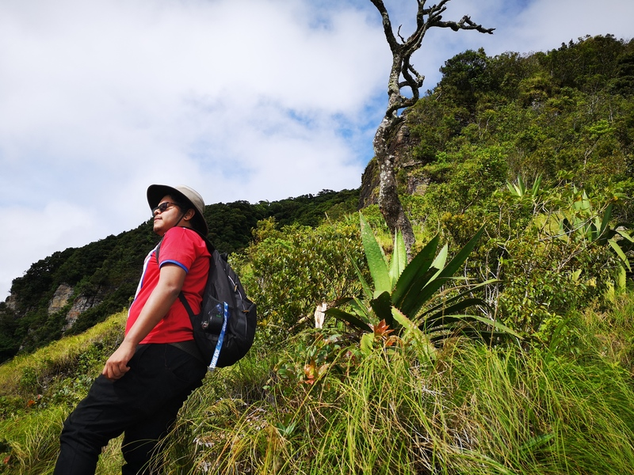
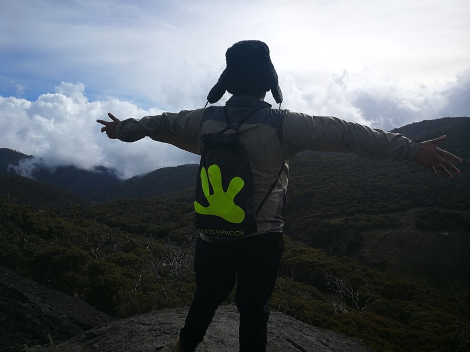

Rafiki de Viaje

Acompáñame mientras recorro diferentes destinos y comparto mis experiencias de viaje. Soy Rafiki y estoy aquí para inspirarte a explorar el mundo y descubrir nuevos horizontes. Únete a mí en esta aventura llena de paisajes impresionantes, consejos de viaje y momentos inolvidables. ¡No te pierdas ninguna de mis historias y haz parte de este increíble camino!
Soy Kevin, pero me dicen Rafiki. Soy un aventurero costarricense que se mudó a Argentina en busca de nuevas experiencias. Como reclutador freelance, combino mi pasión por los viajes con mi amor por conectar personas.